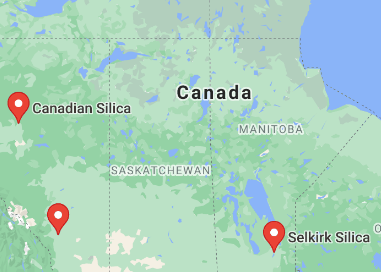
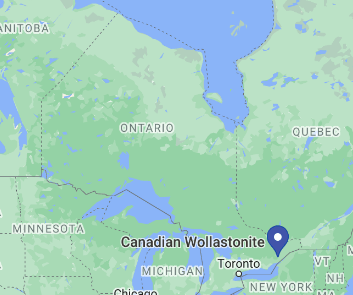
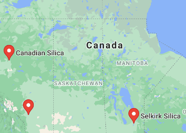
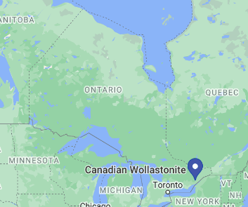
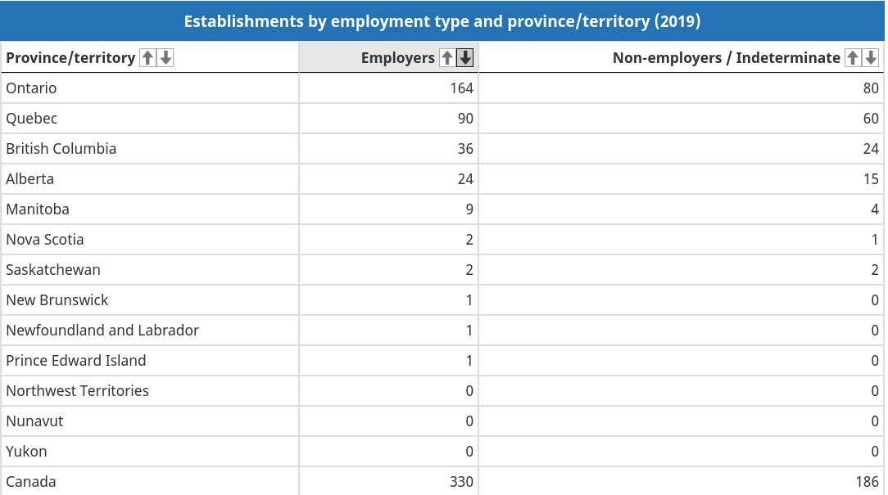
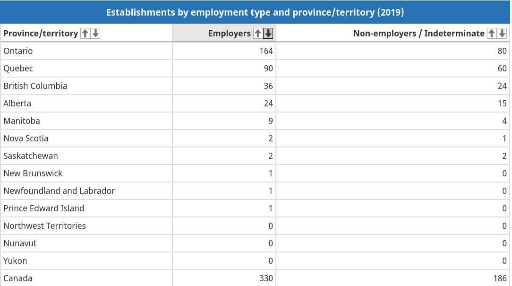

Liam B Hohertz - Sparked Interest Summative April 2021
What is a semiconductor?
A semiconductor material has an electrical conductivity value falling between that of a conductor, such as metallic copper, and an insulator, such as glass. Semiconductors are used to make up computer parts. Examples of semiconductors are silicon, germanium, gallium arsenide, and elements near the metalloid staircase on the periodic table. You can’t directly mine for semiconductors you instead have to mine for the dioxide for that element. For example for Silicon you have to mine Silica then expose it to 1723°C temperatures then it becomes silicon.

Where is the resource/industry located in Canada?
While the materials to make semiconductors are found in every province the three main provinces that make the most by GDP are Ontario, Quebec and Alberta. The main semiconductor that Canada manufactures is silicon so Canada needs to mine silica. For Silica mining to be economically viable a deposit should be 95-99% pure. It is pit mined.

What/where are some of the silica mines in Canada?
One of the biggest silica mining companies in Ontario is Canadian Wollastonite they mine silica among other minerals. The biggest silica mine in Manitoba is Selkirk Silica which is just northeast of Winnipeg it was started in the late 1960s. Canadian Silica is a silica mine in northwest Alberta that exports to the United States. Below is a picture from Selkirk Silica.
 



What kind of resource is it?
The things semiconductors are made of are non-renewable. They cannot be rapidly replenished.
What levels of industries are involved?
All three are involved. The primary industry is the people who mine the rocks that contain the semiconductor. Then the secondary industrious job is getting the semiconductor out of the rock. Finally, the tertiary industry is in charge of pricing and selling the semiconductor to the companies or countries that want them. A total of 15151 Canadians are employed in the semiconductor industry. The average wage for a worker is $23.19 and hour. There are 330 semiconductor establishments in Canada. There 89 establishments with 1-4 employees 196 with 5-99 employees, 42 with 100-499, and 3 with 500+ employees. The province with the most is Ontario with 164 establishments.
 

What is the semiconductor industry’s contribution to Canada’s GDP?
In 2020 Canada’s semiconductor industry contributed 1,220,000,000 billion dollars to Canada’s GDP. This is the lowest it has been in five years. The only two provinces that provincial GDP went up in the Semiconductor sector were Alberta and Prince Edward Island.
Why is the semiconductor industry important to Canada?
In 2020 Canada’s semiconductor industry contributed 1,220,000,000 billion dollars to Canada’s GDP. This is the lowest it has been in five years. The only two provinces that provincial GDP went up in the Semiconductor sector were Alberta and Prince Edward Island.

Who influences the semiconductor industry?
The semiconductor industry is dominated by the US and China, and trade disputes between these two countries have affected the entire global semiconductor market. It would be a mistake, however, to assume the two nations control the entire semiconductor market share. Big chip manufacturers like Intel, AMD, Nvidia to name a few need semiconductors to make their products so they have a large influence on the semiconductor industry.

What is the problem?
The people who work in the semiconductor industry have to stay at home because of the pandemic. With that, they can’t be mining the resources to make semiconductors. For example, Canada’s semiconductor exports for all countries in 2020 went down almost 1 billion dollars compared to 2019. So semiconductors haven’t been produced as much as in other years. With this, there are not as many chips that are made up of semiconductors. Apple even had to delay the release of the iPhone 12 because of the shortage. To make matters worse more and more people need computers because of Covid and every one going online for work/school. So due to the scarcity of chips and semiconductors and the high demand for computers, this is the 2021 Global chip/ semiconductor shortage. But there is hope Cisco CEO Chuck Robbins told the BBC: that his company thinks the chip shortage should only last for another 6 months.

My opinion.
I think this is a very important problem and should be at the forefront of the government’s recovery plan from the pandemic. This is important because in this day and age everybody is using a device. The backbone of those devices is semiconductors. The more the supply chain gets disrupted the more people who won’t have devices or will have to overpay for devices that they need for work or school.

How this problem could be solved.
I think the federal government should work on vaccinating people so people who work in the semiconductor industry can get back to work. I also think that the government should work on trying to get more people to work in Canada’s semiconductor industry after the pandemic. They could do this by putting ads promoting the semiconductor industry over social media. They could also reach out to popular chip manufacturers and ask them to open manufacturing plants in Canada so more people would be interested in joining them.